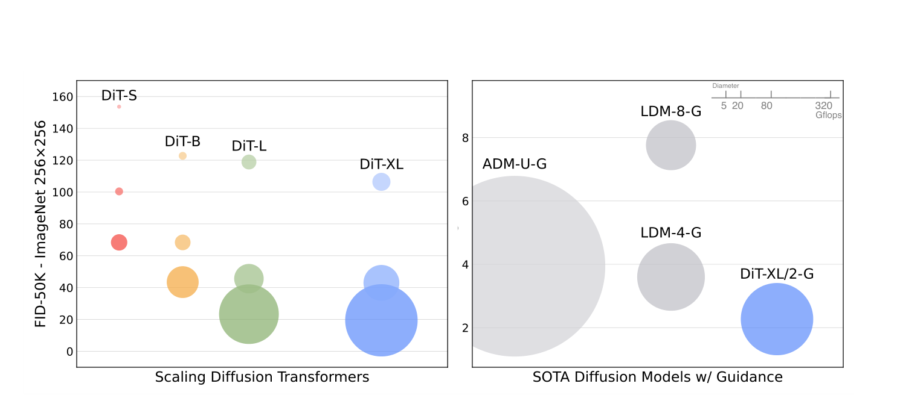
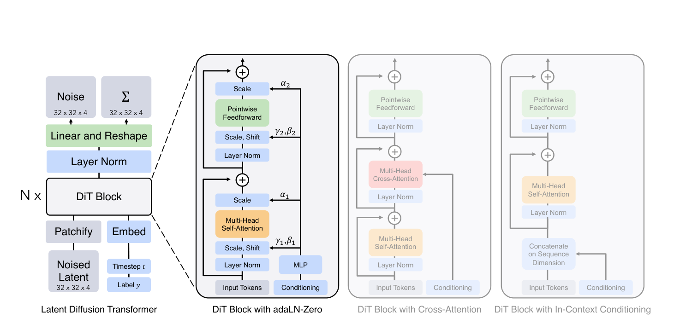
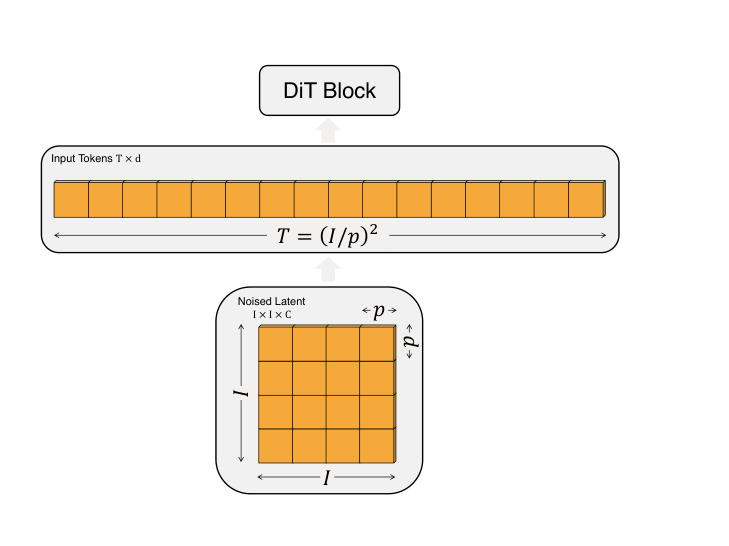
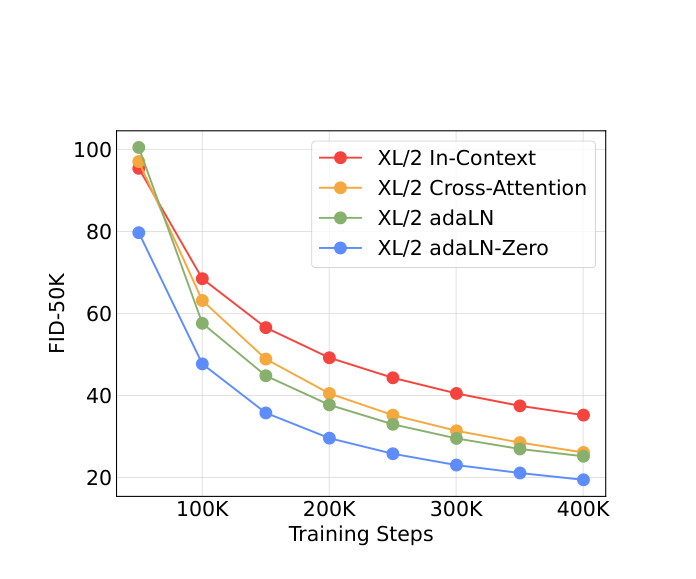
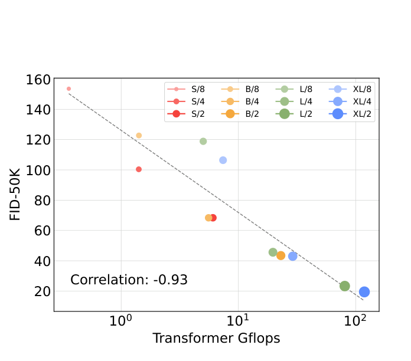

DiT（Diffusion Transformer）¶
📄 论文链接：arXiv:2212.09748（Scalable Diffusion Models with Transformers, ICCV 2023）| PDF
核心要点¶
- 用 Transformer 替换扩散模型的 U-Net 骨干：在 Latent Diffusion（LDM）框架下，把去噪网络从卷积 U-Net 换成基于 ViT 的 Transformer（DiT），证明 U-Net 的归纳偏置对扩散模型并非必需。
- adaLN-Zero 是最优的条件注入方式：对比 in-context、cross-attention、adaLN、adaLN-Zero 四种把 timestep \(t\) 和类别 \(c\) 注入 Transformer 的设计，adaLN-Zero（自适应 LayerNorm + 残差分支零初始化为恒等函数）效果最好且计算开销最小。
- Gflops 才是决定生成质量的关键，而非参数量：模型的前向计算量（加深加宽模型、或减小 patch size 增加 token 数）与生成质量（FID）呈强负相关；patch size 减半会让 token 数与 Gflops 翻 4 倍，但参数量几乎不变，质量却显著提升。
- 优良的可扩展性（scalability）：沿 S/B/L/XL × patch size 8/4/2 共 12 个配置扫描，计算量越大质量单调越好，为后续 Sora、Stable Diffusion 3 等采用 Transformer 骨干的扩散模型奠定基础。
1. 背景与动机¶
- Transformer 已经统一了 NLP（GPT/BERT）、视觉（ViT）等领域的架构，但图像扩散模型是个例外：从 DDPM（Ho et al.）开始，卷积 U-Net 一直是事实标准骨干——U-Net 继承自 PixelCNN++，以 ResNet block 为主，在低分辨率层插入空间自注意力，ADM 又消融了自适应归一化等设计，但整体结构多年未变。
- 本文要回答的问题：扩散模型的性能是否依赖 U-Net 的归纳偏置？ 答案是否定的——U-Net 可以被标准 Transformer 直接替换，从而让扩散模型继承架构统一化红利：其他领域的训练最佳实践、可扩展性、鲁棒性与效率。
- 分析视角：以往图像生成文献常用参数量衡量模型复杂度，但参数量不反映输入分辨率的影响。本文改用理论 Gflops（前向计算量）作为复杂度度量，研究"网络复杂度 vs 生成质量"的 scaling 规律。

Figure 2: 左——DiT 各配置的 Gflops（气泡面积）与 FID，计算量越大质量越好；右——DiT-XL/2 与 U-Net 系（ADM、LDM）对比，计算效率更优2. 方法¶
2.1 预备知识¶
扩散公式（DDPM）：前向加噪过程 \(q(x_t|x_0) = \mathcal{N}(x_t; \sqrt{\bar\alpha_t}\,x_0, (1-\bar\alpha_t)\mathbf{I})\)，重参数化采样 \(x_t = \sqrt{\bar\alpha_t}\,x_0 + \sqrt{1-\bar\alpha_t}\,\epsilon_t\)。模型学习反向过程 \(p_\theta(x_{t-1}|x_t) = \mathcal{N}(\mu_\theta(x_t), \Sigma_\theta(x_t))\)：
- 均值经重参数化为噪声预测网络 \(\epsilon_\theta\)，用简单 MSE 训练：\(\mathcal{L}_{\text{simple}}(\theta) = \|\epsilon_\theta(x_t) - \epsilon_t\|_2^2\)
- 协方差 \(\Sigma_\theta\) 是可学习的，沿用 Nichol & Dhariwal 的做法：\(\epsilon_\theta\) 用 \(\mathcal{L}_{\text{simple}}\) 训练，\(\Sigma_\theta\) 用完整的变分下界项训练
🚗 Classifier-free guidance（CFG）：条件模型 \(p_\theta(x_{t-1}|x_t, c)\) 中，训练时随机丢弃条件 \(c\)（换成可学习的空 embedding \(\emptyset\)），采样时用
引导采样偏向高 \(p(x|c)\) 区域（\(s > 1\) 为引导强度，\(s=1\) 退回标准采样）。
CFG 为什么要随机丢弃条件 🚗¶
CFG 的核心 trick 是：训练时让模型偶尔“盲画”，推理时再用“盲画”和“按指令画”的差值方向，把生成结果往条件方向猛地推一把。 🚗
具体做法：训练过程中以 10%~20% 的概率把条件 \(c\)（类别标签或文本嵌入）替换成可学习的空 embedding \(\emptyset\)。这样同一个模型同时学会两件事：
- 有条件：\(\epsilon_\theta(x_t, c)\)，按指令去噪；
- 无条件：\(\epsilon_\theta(x_t, \emptyset)\)，只靠图像先验去噪。
推理时，把两者按引导系数 \(s\) 外推：
如果训练时从没让模型学过无条件去噪，\(\epsilon_\theta(x_t, \emptyset)\) 就会不准，CFG 外推反而会让结果崩掉。随机丢弃条件正是为了确保这个“无条件”预测足够可靠。
LDM 🚗¶
Latent Diffusion（LDM，潜空间扩散）🚗
像素空间直接做扩散计算代价太高，所以 LDM 把扩散过程搬到图像的“压缩表示”——潜空间里做。
第一阶段：训自编码器（VAE） - 编码器 \(E\)：把图像压缩成低维 latent，\(z = E(x)\)。 - 解码器 \(D\)：把 latent 还原成图像，\(x \approx D(z)\)。 - 例如 Stable Diffusion 的 VAE 把 \(256 \times 256 \times 3\) 的图压缩成 \(32 \times 32 \times 4\) 的 latent，空间小了约 48 倍。
第二阶段：在 latent 上做扩散 - 前向：往 \(z\) 上加噪声，得到 \(z_t\)。 - 反向：模型学习从 \(z_t\) 去噪回 \(z\)。 - 采样完成后用 \(D\) 解码回像素空间。
为什么这样做？ 🚗 直接在像素空间扩散要处理大量冗余信息，训练和采样都很慢；潜空间维度低、token 少，既保留语义又大幅降低计算量。
DiT 沿用 LDM 框架：它本身只负责“在潜空间里去噪”，图像压缩/还原由外面的 VAE 负责。整体管线是 卷积 VAE + Transformer 扩散模型 的混合方案。
DiT 在 LDM 中的完整数据流 🚗¶
原始图像 (256×256×3)
↓ VAE 编码器（LDM 部分）
latent 特征图 z (32×32×4)
↓ 加噪（按 timestep t 加入高斯噪声 ε）
Noised latent z_t (32×32×4)
↓ Patchify
把 32×32 切成 p×p 的 patch → T = (32/p)² 个 token
每个 patch 线性投影到 d 维
token 序列 (T, d)
↓ DiT Transformer
token 序列 (T, d)
↓ 输出头：Linear + Reshape
预测的噪声 ε (32×32×4) + 协方差 Σ (32×32×4)
↓ 去噪步骤（在 latent 空间反复迭代）
干净的 latent (32×32×4)
↓ VAE 解码器
生成图像 (256×256×3)
DiT 的输入、输出、去噪全部在 latent 空间完成，只在 VAE 编码/解码两端接触原始像素。
加噪步骤的细节：训练时，从真实图像得到 \(z\) 后，会按当前 timestep \(t\) 加入高斯噪声：\(z_t = \sqrt{\bar\alpha_t}\,z + \sqrt{1 - \bar\alpha_t}\,\epsilon\)；推理时没有真实图像，直接从 \(z_T \sim \mathcal{N}(0, \mathbf{I})\) 开始迭代去噪。
2.2 整体架构 🚗 看图¶

Figure 3: 左——Latent DiT 整体流程（Patchify → N 个 DiT Block → LayerNorm + 线性解码）；右——三种条件注入的 block 设计，adaLN-Zero 效果最佳Noised Latent (32×32×4)
↓ Patchify（p×p patch 线性嵌入 + 正弦余弦位置编码）
Input Tokens (T×d) Timestep t、Label y → Embed → Conditioning
↓ ↓
N × DiT Block（adaLN-Zero，条件从这里注入）
↓
LayerNorm（自适应）→ Linear and Reshape
↓
噪声预测 ε (32×32×4) + 协方差预测 Σ (32×32×4)
2.3 Patchify¶
DiT 忠实沿用 ViT 的做法：把空间输入 \(I \times I \times C\) 的 latent 切成 \(p \times p\) 的 patch，逐 patch 线性嵌入为 \(d\) 维 token，得到长度 \(T = (I/p)^2\) 的序列，随后加标准 ViT 正弦余弦位置编码。

Figure 4: patch size \(p\) 减半 → token 数 \(T\) 翻 4 倍 → Transformer 总 Gflops 至少翻 4 倍，但参数量基本不变关键性质：\(p\) 只影响序列长度（计算量），对参数量几乎无影响——这为后面"Gflops 才是关键"的结论提供了干净的对照变量。设计空间取 \(p = 2, 4, 8\)。
2.4 DiT Block：四种条件注入设计 🚗¶
扩散模型除了噪声图像还要接收 timestep \(t\)、类别 \(c\) 等条件信息。论文对标准 ViT block 做最小修改，探索四种注入方式：
| 设计 | 做法 | 额外 Gflops |
|---|---|---|
| In-context conditioning | 把 \(t\)、\(c\) 的 embedding 当作 2 个额外 token 拼进序列（类似 ViT 的 cls token），最后一层后移除；block 本身完全不动 | 可忽略 |
| Cross-attention block | \(t\)、\(c\) embedding 拼成长度 2 的独立序列，在 self-attention 之后加一层 multi-head cross-attention（类似原始 Transformer decoder 和 LDM 的类别条件方式） | 最大，约 +15% |
| adaLN block | 把 block 里的标准 LayerNorm 换成自适应 LayerNorm：缩放/平移参数 \(\gamma, \beta\) 不直接学习，而是由 \(t\) 与 \(c\) 的 embedding 之和回归出来。沿用了 GAN 和扩散 U-Net 中广泛使用的自适应归一化思想 | 最小 |
| adaLN-Zero block | 在 adaLN 基础上，额外回归逐维度缩放参数 \(\alpha\)，作用在每个残差相加之前；把回归 \(\alpha\) 的 MLP 零初始化，使整个 DiT block 初始化为恒等函数 | 可忽略 |
adaLN-Zero 的动机：ResNet 时代的经验——把每个残差 block 初始化为恒等函数有利于训练（如 Goyal et al. 把每个 block 最后一层 BatchNorm 的 \(\gamma\) 零初始化可加速大规模监督训练）；扩散 U-Net 也用类似策略（每个 block 残差前的最后一层卷积零初始化）。DiT 把这一经验移植到 Transformer。
adaLN 的一个特点：它是四种设计中唯一对所有 token 施加相同函数的条件机制（条件只调制归一化的缩放平移，不做 token 级交互）。
实验结论（论文 Figure 5）：adaLN-Zero 在整个训练过程中始终优于 cross-attention 和 in-context；且初始化方式本身很重要——adaLN-Zero 显著优于普通 adaLN。后续所有 DiT 模型统一采用 adaLN-Zero。

Figure 5: adaLN-Zero 在训练各阶段均优于其他设计，同时计算效率最高2.4.1 AdaLN-Zero 深入拆解 🚗¶
既然你关注到了架构图中的条件注入，那 AdaLN-Zero 就是 DiT 整个设计中最精妙的“灵魂操作”。为了让你彻底吃透，我们从 “设计公式” 和 “代码实现” 两个层面来拆解。
它由两部分组成：AdaLN（动态调节） + Zero（强制恒等映射）。两者配合，缺一不可。
0. 条件编码与六个调制参数的来源 🚗¶
在讲 AdaLN 和 Zero 之前，先搞清楚条件 \(c\) 以及 \(\gamma_1, \beta_1, \alpha_1, \gamma_2, \beta_2, \alpha_2\) 是怎么来的。
Timestep 与 Label 编码
- Timestep embedding：用正弦余弦位置编码把整数 \(t\) 映射为 \(d\) 维向量（固定的、不可学习的）： $\(\text{embed}(t) = \text{SinusoidalEmbedding}(t) \in \mathbb{R}^d\)$
- Label embedding：类别标签 \(y\) 通过可学习 embedding 表查询： $\(\text{embed}(y) = W_y[y] \in \mathbb{R}^d\)$
两者相加得到条件向量：
六个调制参数怎么获得
每个 DiT block 内部的 adaLN MLP 以 \(c\) 为输入，回归出 6 个 \(d\) 维向量：
这里的 \(\gamma, \beta, \alpha\) 都是 \(d\) 维向量，不是标量。标准 LayerNorm 本身就为每个特征维度配备独立的 \(\gamma_j\) 和 \(\beta_j\)；AdaLN 只是把它们改由条件 \(c\) 动态预测。\(\alpha\) 同理，是对残差分支输出做逐维度门控。
MLP 通常是两层：
注意：不是 6 个标量，而是 6 个 \(d\) 维向量。因为 \(\gamma, \beta, \alpha\) 都要对特征向量的每个维度做逐元素调制，所以每个参数都是 \(\mathbb{R}^d\)。MLP 最后一层实际输出的是 \(6d\) 个数字，再拆成 6 段：
# c: [batch, d]
adaLN_out = mlp(c) # [batch, 6 * d]
gamma1, beta1, alpha1, gamma2, beta2, alpha2 = adaLN_out.chunk(6, dim=-1)
# 每个都是 [batch, d]
chunk(6, dim=-1)：沿最后一个维度把[batch, 6d]切成 6 等份，每份[batch, d]，正好对应 6 个调制向量。
关键：\(W_2\) 和 \(b_2\) 初始化为 0，保证训练开始时六个参数全为 0，block 等价于恒等映射。
它们在 block 里怎么用
- \(\gamma, \beta\)：动态替代静态 LayerNorm 的缩放和平移。
- \(\alpha\)：控制残差分支强度，零初始化保证初始不起作用。
一句话总结
\(t\) 和 \(y\) 先 embedding 相加得到 \(c\)；每个 block 的 MLP 从 \(c\) 回归出 \((\gamma_1, \beta_1, \alpha_1, \gamma_2, \beta_2, \alpha_2)\)；MLP 最后一层零初始化，保证训练起点为恒等映射。
1. AdaLN部分：让条件“拧动”特征 🚗¶
在标准 ViT 里，Layer Norm 是静态的（固定的缩放 γ 和偏移 β）。而 AdaLN 将这两个参数变成了 条件向量 \(c\) 的函数。
对于输入特征 \(x\) 和融合后的条件向量 \(c\)，AdaLN 的数学表达式为：
这里的 \(\gamma(c)\) 和 \(\beta(c)\) 是由 \(c\) 通过一个 MLP 回归出来的 动态向量。
2. Zero部分：强制“残差分支归零” 🚗¶
这是 DiT 训练稳定性的命门。在每一个 DiT 模块中，它不仅仅是简单地把特征扔进多头自注意力（MSA）和前馈网络（MLP），而是给这两个子模块的输出分别 乘上一个额外的缩放因子 \(\alpha\)。
完整的单个 DiT 模块前向公式如下：
这里最关键的是：\(\alpha_1\) 和 \(\alpha_2\) 并不是可学习的常数，而是同样由条件向量 \(c\) 通过 MLP 回归出来的动态标量（或向量）。
3. “Zero”是如何生效的？（初始化技巧） 🚗¶
现在到了最核心的设计：那个用来回归 \(\gamma, \beta, \alpha\) 的 MLP，其 最后一层线性层（Linear Layer）的权重矩阵被显式地初始化为 0，偏置也初始化为 0。
这意味着在训练刚开始的那一刻：
- \(\gamma\) 和 \(\beta\) 都是 0。
- \(\alpha_1\) 和 \(\alpha_2\) 也都是 0。
带入上面的公式看会发生什么：
- 因为 \(\gamma=0, \beta=0\)，所以 \(\text{AdaLN}(x, c) = 0 \cdot \text{LN}(x) + 0 = \mathbf{0}\)（全零向量）。
- 因为输入是零向量，所以 \(\text{MSA}(\mathbf{0}) = \mathbf{0}\)。
- 因为 \(\alpha_1 = 0\)，所以 \(x' = x + 0 \cdot \mathbf{0} = x\)。
- 同理，经过 MLP 模块，\(x'' = x'\)。
结论：在训练初期，无论你有几十层甚至上百层 DiT，整个网络的前向传播退化为完美的“恒等映射”（Identity Mapping），即输入等于输出。
4. 为什么非要这么设计？（背后的物理意义） 🚗¶
既然你熟悉 ViT，你肯定知道深层网络最怕 梯度消失或梯度爆炸。但在扩散模型里，这个“Zero”技巧有三个更深层的救命作用：
- 扛住初期的剧烈震荡：训练刚开始时，输入图片充满高频噪声（方差极大）。如果网络初始化不当，深层梯度瞬间就会爆炸。强制恒等映射保证了梯度像“直通管”一样无损地回传，给网络一个 极稳的起飞平台。
- 让条件信号“由弱变强”：随着训练进行，梯度下降会慢慢把最后一层 MLP 的权重从 0 推开。这意味着 \(\gamma, \beta, \alpha\) 会 从 0 逐渐增大。这就好比给网络加了一个“软启动”开关——条件信号（时间步 t 和标签 y）对主干的控制力是 渐进的，而不是训练一开始就粗暴地强行干预，导致震荡。
- 对比常规初始化：如果不用 Zero，而是用常规的 Xavier 初始化，那么 100 层残差网络初期也会有约 \(\sqrt{N}\) 的信号放大，极易在 Diffusion 的早期步数导致 NaN（溢出）。Zero 技巧完美规避了这一点。
一句话总结其设计精髓 🚗¶
AdaLN-Zero = “将外部的控制信号（t, y），转化并注入为每层网络内部的特征缩放（γ, β）与残差门控（α），并利用零初始化，确保网络在训练初期是一个不受干扰的恒等映射。”
这个设计后来也启发了 LLM 中的一些初始化方案（如部分 MoE 路由的零初始化）。如果你感兴趣，我还可以告诉你：在代码实现中，这个“最后一层零初始化”是如何通过一行 nn.init.constant_(layer.weight, 0) 精确生效的，以及为什么偏置也要置零，需要细说吗？
2.5 模型规格与解码头¶
沿 ViT 的配置方式联合缩放深度 \(N\)、宽度 \(d\)、注意力头数：
| 模型 | 层数 \(N\) | Hidden size \(d\) | Heads |
|---|---|---|---|
| DiT-S | 12 | 384 | 6 |
| DiT-B | 12 | 768 | 12 |
| DiT-L | 24 | 1024 | 16 |
| DiT-XL | 28 | 1152 | 16 |
命名规则：DiT-XL/2 = XLarge 配置 + patch size \(p = 2\)。
Transformer decoder（输出头）：最后一个 DiT block 之后，先过最终 LayerNorm（用 adaLN 时同样自适应），再用标准线性层把每个 token 解码成 \(p \times p \times 2C\) 的张量（同时预测噪声 \(\epsilon\) 和对角协方差 \(\Sigma\)，各占 \(C\) 通道），最后按原空间布局重排回去。
完整设计空间 = patch size × block 架构 × 模型规模。
2.6 训练配置¶
- AdamW，恒定学习率 \(10^{-4}\)，无 weight decay，batch size 256，数据增强只有水平翻转
- 不需要 learning rate warmup、也不需要正则化即可稳定训练，所有配置均未观察到 Transformer 常见的 loss spike
- 权重维护 EMA（衰减 0.9999），报告结果均用 EMA 模型
- 超参几乎全部沿用 ADM，未针对 DiT 调参——说明该架构对超参不敏感
- 扩散超参：\(t_{\max} = 1000\) 线性方差调度，沿用 ADM 的协方差参数化与 timestep/label embedding 方式
3. 推理过程：从纯噪声生成图像 🚗¶
DiT 训练时只学了一件事——预测 latent 里被加进去的噪声。推理时则反过来：从一张纯随机噪声的 latent 开始，通过多步去噪“雕琢”出真实图像。
核心流程：
- 从标准正态分布采样起点：\(z_T \sim \mathcal{N}(0, \mathbf{I})\)。
- 从 \(t = T\) 到 \(t = 1\) 循环：
- 把 \(z_t\) 和 timestep \(t\)（以及 label \(c\)）喂给 DiT；
- DiT 预测噪声 \(\epsilon_\theta(z_t, c)\)；
- 按采样公式算出稍微干净一点的 \(z_{t-1}\)。
- 得到干净的 \(z_0\) 后，用 VAE 解码器还原成像素图像。
Classifier-Free Guidance：
每一步同时跑两次前向： - 有条件：\(\epsilon_\text{cond} = \epsilon_\theta(z_t, c)\) - 无条件：\(\epsilon_\text{uncond} = \epsilon_\theta(z_t, \emptyset)\)
再外推得到最终噪声预测：
\(s\) 是引导强度，\(s > 1\) 时生成结果更贴合标签、细节更锐利，但过大容易失真。
核心思想：扩散模型的“生成”本质上是把高维空间里的随机点，沿着数据分布的梯度方向（score function）一步步推向“真实图像流形”。训练学的是去噪，推理时用去噪来实现无中生有。
🚗 完整过程一句话版：
DiT 推理时首先从标准正态分布采样一个纯随机噪声 latent \(z_T \sim \mathcal{N}(0, \mathbf{I})\) 作为起点；
然后从 \(t = T\) 到 \(t = 1\) 逐步迭代，每一步都把当前带噪 latent \(z_t\) 和 timestep \(t\) 一起送入 DiT，分别在有条件和无条件两种设置下各做一次前向传播，得到两个噪声预测后通过 CFG 公式 \(\hat\epsilon = \epsilon_\text{uncond} + s \cdot (\epsilon_\text{cond} - \epsilon_\text{uncond})\) 外推得到最终噪声预测；
再用该预测代入采样公式算出更干净的 \(z_{t-1}\) 作为下一步输入继续去噪；
循环结束后得到干净 latent \(z_0\)，最后通过 VAE 解码器还原成像素空间的生成图像。
4. 实验¶
按笔记规范不展开具体分数，只记结论：
- 条件注入消融：adaLN-Zero > adaLN > cross-attention > in-context，条件机制的选择对质量影响关键（见 Figure 5）。
- Scaling 行为：12 个模型（S/B/L/XL × p=8/4/2）扫描——增大模型规模、减小 patch size 都能在训练各阶段稳定提升质量。
- Gflops 是本质变量：固定模型规模、减小 patch size 时，参数量基本不变（甚至略降）而 Gflops 增加，质量仍显著提升；不同配置只要总 Gflops 相近，质量就相近（如 S/2 与 B/4）。Gflops 与 FID 呈强负相关。
- 大模型计算效率更高：同样的训练算力预算下，大 DiT 比小 DiT 利用得更充分；对小模型延长训练也无法追上大模型。

Figure 8: 12 个 DiT 配置的 Transformer Gflops 与 FID-50K 呈强负相关——计算量而非参数量决定质量5. 总结¶
- DiT 证明了扩散模型骨干可以完全 Transformer 化：U-Net 归纳偏置不是必需的，标准 ViT 式设计（patchify + 正弦余弦位置编码 + 标准 block）即可，且保留了 Transformer 的 scaling 特性。
- 方法上的核心贡献是 adaLN-Zero：自适应 LayerNorm 注入条件（由 \(t + c\) 的 embedding 回归 \(\gamma, \beta, \alpha\)）+ 残差分支零初始化为恒等函数——以最小计算代价拿到最好的条件生成质量。
- 分析上的核心贡献是把复杂度度量从参数量换成 Gflops，并证明它与生成质量强相关——增加计算（更深更宽或更多 token）是提升扩散模型的关键因素。
- 影响：DiT 成为后续视频/图像生成模型（Sora、Stable Diffusion 3 等）Transformer 化扩散骨干的直接源头。
一句话总结：DiT = LDM 潜空间 + ViT 骨干 + adaLN-Zero 条件注入，用"Gflops ↔ 质量"的强相关证明扩散模型同样遵循 Transformer 的 scaling 规律。